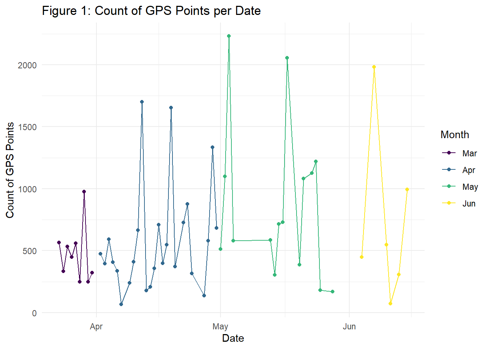

a review and framework of generating walking trajectories
Author
Xiao Cui
load packages, import data
# check packages: ------------------------------------------------------------------------------## Default repositorylocal({r <-getOption("repos")r["CRAN"] <-"http://cran.r-project.org"options(repos=r)})check_pkg <-function(x){if (!require(x, character.only =TRUE, quietly =TRUE)) {install.packages(x, dep =TRUE, verbose =FALSE, quiet =TRUE)if(!require(x, character.only =TRUE, quietly =TRUE)) stop("Package not found") }}check_pkg("dplyr")check_pkg("lubridate")check_pkg("geosphere")check_pkg("tidyverse")check_pkg("sf") # check_pkg("purrr") # package for precise calculationcheck_pkg("readr") # a better way to read data than basic Rcheck_pkg("rnaturalearth") # package for requiring DEM datacheck_pkg("raster")check_pkg("elevatr") # package for handling DEMcheck_pkg("terra") # package for raster data handlingcheck_pkg("skimr") # a better package to summarize datacheck_pkg("ggplot2") # package for plotscheck_pkg("smplot2") # package for more functions based on ggplotcheck_pkg("mapview") # package for interactive mapscheck_pkg("randomForest") # package for random forestcheck_pkg("caret") # package for random forestcheck_pkg("e1071") # package for random forest# import data ------------------------------------------------------------------------------posmo_df <- readr::read_csv("posmo_2024-03-23_2024-06-15.csv",col_types =cols(user_id =col_character(),datetime =col_datetime(),weekday =col_factor(levels =c("Sun", "Mon", "Tue", "Wed", "Thu", "Fri", "Sat")), # read daytime as a factorplace_name =col_character(),transport_mode =col_factor(levels =c("Walk", "Tram", "Bus", "Bike", "Train", "Car")),lon_x =col_double(),lat_y =col_double() )) |> dplyr::select(-user_id) # remove user_id because we only have one user here
1 Abstract
Daily GPS trajectories have a huge potential in understanding people’s daily mobility patterns. However, there is still uncertainty in how to detect travel modes from abundant GPS point data accurately. We review and summarize recent studies about GPS data reprocessing, combining geographic context with trajectories, and travel mode detection. Then we detect walking travel mode from daily GPS data generated by POSMO application under this framework. We focus on walking trip identification and rebuild two rule-based algorithms for raw point data and utilize random forest with labeled GPS coordinates. Result shows random forest has the best performance among three detection methods with the accuracy of 93.8%. However, rule-based algorithms are more understandable and doable with around 85% accuracy with the optimal parameters. Speed is the primary factor for identifying walking travel mode compared with other parameters, but acceleration can enhance the precision in the model. Our study provides a framework of identifying walking trajectories and supplementing them by combining other geospatial contexts and map matching.
2 Introduction
With the advancement of technologies such as mobile devices and Internet, Global Positioning System (GPS) trajectory data generated by users, vehicles, and other mobile objects has experienced explosive growth. Massive trajectory data can depict the spatiotemporal movement patterns, which have enormous value in travel strategy Jiaqi (2018), environmental planning, and policy making Yun, Kang, and Lee (2018). Travel mode detection is a core field in trajectory data mining, providing the reference of optimizing traffic flow, tourist management, and travel purpose identification Montini et al. (2014). However, it is still challenging to detect travel modes from daily GPS data because such data contain mixed travel modes Yang et al. (2018). Huang, Cheng, and Weibel (2019) summarize how to from complex by mobile network data. There are three main methods for travel mode detection: rule based, unsupervised machine learning, and supervised machine learning. Xiao, Juan, and Zhang (2015) identify travel modes by Bayesian network from smartphone-based travel surveys. Sadeghian et al. (2022) mentioned random forest performs best among supervised machine learning. Moreover, combining geographic context with GPS data is also a primary component in travel mode detection to handle raw data effectively and supplement more semantic information for trajectories Hong, Stüdeli, and Raubal (2023). Among different travel methods in daily life, walking is not only a common travel mode in daily life, but also a low-cost physical activity which can contribute to health wellbeing Yun, Kang, and Lee (2018). It is a low cost and low carbon physical activities, which can benefit carbon emission and contribute to psychological well-being. In our study, we focus on detecting walking trips from daily movement activities. We tend to answer following research questions:
Q1: How can we rebuild (heuristic) rule-based walking detection methods under point-based segmentation in R? Q2: How do we evaluate the performance of walking detection methods? Q3: How do we match GPS points to a complex road network by topological method? Q4: Does supervised classification (random forest) perform better than rule-based (heuristic) method in walking detection? Q5: How to combine other semantic contexts on trajectories?
3 Material and Methods
3.1 Data attributes
We used daily GPS data collected by POSMO application with the following attributes:
Table 1: attributes in POSMO GPS data
Variable
Label
user_id
the user id of POSMO account
datetime
timestamp of a GPS point
weekday
weekday of timestamp (from Sunday to Saturday)
place_name
the place name where the user is detected as “stop”
transport_mode
travel mode detected by POSMO application
lon_x
longitude of GPS point
lat_x
latitude of GPS point
have a review on the raw data
# have a breif view of our data# Check structure of datasetskimr::skim(posmo_df)
Data summary
Name
posmo_df
Number of rows
37174
Number of columns
6
_______________________
Column type frequency:
character
1
factor
2
numeric
2
POSIXct
1
________________________
Group variables
None
Variable type: character
skim_variable
n_missing
complete_rate
min
max
empty
n_unique
whitespace
place_name
36739
0.01
4
34
0
76
0
Variable type: factor
skim_variable
n_missing
complete_rate
ordered
n_unique
top_counts
weekday
0
1.00
FALSE
7
Fri: 13075, Tue: 5754, Thu: 4947, Mon: 4614
transport_mode
435
0.99
FALSE
6
Wal: 14898, Tra: 9781, Tra: 7165, Bus: 2684
Variable type: numeric
skim_variable
n_missing
complete_rate
mean
sd
p0
p25
p50
p75
p100
hist
lon_x
0
1
8.55
0.04
8.50
8.52
8.54
8.55
8.69
▇▆▁▁▁
lat_y
0
1
47.36
0.04
47.22
47.36
47.37
47.38
47.41
▁▁▁▆▇
Variable type: POSIXct
skim_variable
n_missing
complete_rate
min
max
median
n_unique
datetime
0
1
2024-03-23 10:35:10
2024-06-15 13:00:40
2024-04-29 21:19:28
36071
have a review on the raw data
head(posmo_df)
# A tibble: 6 × 6
datetime weekday place_name transport_mode lon_x lat_y
<dttm> <fct> <chr> <fct> <dbl> <dbl>
1 2024-03-23 10:35:10 Sat Careum Bildungszentrum <NA> 8.55 47.4
2 2024-03-23 11:55:38 Sat <NA> Walk 8.55 47.4
3 2024-03-23 11:55:38 Sat <NA> Walk 8.55 47.4
4 2024-03-23 11:55:49 Sat <NA> Walk 8.55 47.4
5 2024-03-23 11:56:00 Sat <NA> Walk 8.55 47.4
6 2024-03-23 11:56:11 Sat <NA> Walk 8.55 47.4
have a review on the raw data
tail(posmo_df)
# A tibble: 6 × 6
datetime weekday place_name transport_mode lon_x lat_y
<dttm> <fct> <chr> <fct> <dbl> <dbl>
1 2024-06-15 13:00:18 Sat <NA> Walk 8.52 47.4
2 2024-06-15 13:00:25 Sat <NA> Walk 8.52 47.4
3 2024-06-15 13:00:34 Sat <NA> Walk 8.52 47.4
4 2024-06-15 13:00:40 Sat <NA> Walk 8.52 47.4
5 2024-06-15 13:00:40 Sat <NA> Walk 8.52 47.4
6 2024-06-15 13:00:40 Sat Uetlibergstrasse 129a <NA> 8.52 47.4
have a review on the raw data
# Extract the date from the datetime columnposmo_df <- posmo_df |>mutate(date =as_date(datetime))# Count of days with recordslength(unique(posmo_df$date))
[1] 78
have a review on the raw data
# date records frommin(posmo_df$date)
[1] "2024-03-23"
have a review on the raw data
# date records frommax(posmo_df$date)
[1] "2024-06-15"
GPS data are recorded by 5-15 second intervals and labeled with transform mode. Users can fix this attribute by adjusting transfer mode manually then validate and export data as a csv document. There are 37174 GPS points in the raw data set with 78 days (from 2024-03-23 to 2024-06-15).
A typical GPS (without supplementary sensors) can usually collect longitude, latitude, and timestamp during operation, but we have more attributes (place_name, transport_mode) here. We assume it combines with other sensors or algorithms for marking location and travel status. Thus, we refer to the project document to learn more about data collection.
3.2 Data collection
The smartphone for data collection is iPhone Xs Max with iOS Version 17.5.1.
We assume POSMO application has similar functions with a GPS logger (i.e., do not record data while stationary). Trip endpoints are typically identified when the dwell time between two consecutive moving data points exceeds a certain threshold. When the GPS loggers resume movement, they require a few seconds to a few minutes to warm start, leading to missing GPS points at the beginning of the trip Gong et al. (2012).
Code
# Check rows where datetime is out of orderdisordered_df <- posmo_df %>%mutate(is_ordered =c(TRUE, diff(datetime) >=0)) %>%filter(is_ordered =FALSE) |>as_tibble()
Here we find there is no systematic error about temporal disorder in our data, potentially because we use application based GPS data here (i.e., such errors have been fixed before exportation). However, the algorithm for gathering attribute information is still ambiguous. We first explore the data to know how POSMO application collects data. We refer to the documents about data protection under POSMO application. GPS coordinates here are collected via anonymized IP addresses by removing the last 2 bytes (i.e. 198.51.0.0 instead of 198.51.100.54). From the repetitive points statistics below, we find there are 804 endpoints in our raw data. The repeated count of endpoints is between 2 to 4, i.e., when POSMO application detects a “stop”, it will acquire the place name of current anonymized IP address by geocoding (retrieving place names by coordinates), then store this name in the column place_name. In next step, we assume these names are our real origins or destination.
a review of stop detection in POSMO
# Group by datetime and count the number of occurrencesrepeated_counts <- posmo_df |>group_by(datetime) |>summarise(count =n()) |>filter(count >1)# Display the repeated_counts partlycat(" Stop points detection:", "\n","Total count of stops:", nrow(repeated_counts), "\n","Possible point count of each stop:", unique(repeated_counts$count), "\n")
Stop points detection:
Total count of stops: 804
Possible point count of each stop: 2 3 4
a review of stop detection in POSMO
# remove the temporary dataframerm(repeated_counts)
Based on the attributes in POSMO data, we can generate the raw walking segment data easily. We will use it for map matching in the next session.
generate raw walking trajectories
# Convert coordinates to LV95 (Swiss coordinate system)coordinates <-st_as_sf(posmo_df, coords =c("lon_x", "lat_y"), crs =4326, remove =FALSE)coordinates_lv95 <-st_transform(coordinates, 2056)posmo_df$lv95_x <-st_coordinates(coordinates_lv95)[,1]posmo_df$lv95_y <-st_coordinates(coordinates_lv95)[,2]# Assign transport_mode_id based on transport_mode# Filter out rows with null values in the transport_mode columnposmo_df <- posmo_df %>%filter(!is.na(transport_mode))# Assign trip identifiers based on changes in transport_modeposmo_df <- posmo_df %>%mutate(transport_mode_id =cumsum(c(1, as.numeric(transport_mode[-1] != transport_mode[-n()]))))walk <- posmo_df |>filter(transport_mode =="Walk")walk_sf <-st_as_sf(walk,coords =c("lv95_x", "lv95_y"),crs =2056, remove =FALSE)# Create LINESTRING by grouping by transport_mode_idwalk_line <- walk_sf %>%group_by(transport_mode_id) %>%summarise(do_union =FALSE) %>%st_cast("LINESTRING") |>mutate(length =st_length(geometry))# Group points by transport_mode_id and calculate the time duration for each grouptime_durations <- walk_sf %>%group_by(transport_mode_id) %>%summarise(start_time =min(datetime),end_time =max(datetime),time_duration =as.numeric(difftime(max(datetime), min(datetime)), units ="secs") ) |>st_drop_geometry()# Create LINESTRING by grouping by transport_mode_idwalk_line <- walk_sf %>%group_by(transport_mode_id) %>%summarise(do_union =FALSE) %>%st_cast("LINESTRING") %>%mutate(length =st_length(geometry))# Join the time durations back to walk_linewalk_line <- walk_line %>%left_join(time_durations %>% dplyr::select(transport_mode_id, time_duration), by ="transport_mode_id")# Calculate the mean speedwalk_line <- walk_line %>%mutate(speed_m_s =as.numeric(length / time_duration))|>mutate()# Sample the walk_line datasampled_walk_line <- walk_line %>%sample_n(1)# view the sample by mapmapview(sampled_walk_line, zcol ="transport_mode_id")
If there is no movement within one day, there will be only one location (place_name in the attribute table) recorded. Here we define “valid trip day” as “the day with at least three GPS records”. Based on that rule, we generate 35931 GPS points, with 55 valid trip information. Figure 1 below shows the among different dates.
date distribution
# Extract the date from the datetime column# Exclude the data if the record of the day is less than threeposmo_df <- posmo_df |>mutate(date =as_date(datetime)) |>group_by(date) |>filter(n() >=3) |>ungroup()# Count the number of data points per date# Create a new column for the monthdate_counts <- posmo_df |>mutate(date =as.Date(datetime),month =month(date, label =TRUE)) |>group_by(date, month) |>summarise(count =n(), .groups ='drop')# Plot the result with points colored by monthggplot(date_counts, aes(x = date, y = count, color = month)) +geom_line() +geom_point() +labs(x ="Date", y ="Count of GPS Points", title ="Figure 1: Count of GPS Points per Date", color ="Month") +theme_minimal()

date distribution
# remove this temporary dataframe after plotting the resultrm(date_counts)
The standard procedure for processing GPS data to identify travel modes involves three steps. First, the data collected from GPS-enabled smartphones is transferred to computers, where output files suitable for further statistical analysis are created. Second, trips or segments are identified. Finally, travel modes are detected based on the previously processed data.
POSMO application can identify the stay point as the end of a trip, so we assume the signal here is more stable than raw GPS and skip the step of detecting drifted points. We focus on how to detect walking trips in the next session.
3.3 Heuristic (rule-based) approach
Heuristic trip identification algorithms utilize a set of analyst-designed rules to identify trips within GPS trajectories. These rules establish thresholds that distinguish trip records from activity records by examining data features such as time differences between records, speed, and record density. For instance, many heuristic algorithms apply low-speed thresholds, typically in the range of 0 to 0.15 m/s, or 2 to 8 km/h to identify activity records Berjisian and Bigazzi (2022).
Another common method involves using thresholds for dwell time or time differences between consecutive records, sometimes in conjunction with a speed threshold, to identify activities. Typically, a threshold of 40, 60, 90, 120 seconds are used for temporal length Berjisian and Bigazzi (2022).
4 Result
4.1 Walking detection
4.1.1 Walking trip detection: chong
Cho, Rodriguez, and Evenson (2011) define criteria for identifying outdoor walking trips from GPS data. The threshold here is consecutive track points. We adjust the algorithm slightly to interval in our data (5-15 seconds). - 1. speed should be more than 2 km/h (0.56 m/s)and less than 8 km/h (2.22 m/s); - 2. generate gaps if there are more than five consecutive points; - 3. divide GPS data into trips by gaps; - 4. average speed should be no more than 6 km/h (1.67 m/s).
# A tibble: 11,612 × 17
datetime weekday place_name transport_mode lon_x lat_y date
<dttm> <fct> <chr> <fct> <dbl> <dbl> <date>
1 2024-03-23 11:59:32 Sat <NA> Walk 8.55 47.4 2024-03-23
2 2024-03-23 11:59:43 Sat <NA> Walk 8.55 47.4 2024-03-23
3 2024-03-23 11:59:54 Sat <NA> Walk 8.55 47.4 2024-03-23
4 2024-03-23 12:00:05 Sat <NA> Walk 8.55 47.4 2024-03-23
5 2024-03-23 12:00:16 Sat <NA> Walk 8.55 47.4 2024-03-23
6 2024-03-23 12:00:27 Sat <NA> Walk 8.55 47.4 2024-03-23
7 2024-03-23 12:00:37 Sat <NA> Walk 8.55 47.4 2024-03-23
8 2024-03-23 12:00:48 Sat <NA> Walk 8.55 47.4 2024-03-23
9 2024-03-23 12:00:59 Sat <NA> Walk 8.55 47.4 2024-03-23
10 2024-03-23 12:01:09 Sat <NA> Walk 8.55 47.4 2024-03-23
# ℹ 11,602 more rows
# ℹ 10 more variables: lv95_x <dbl>, lv95_y <dbl>, transport_mode_id <dbl>,
# geometry <POINT [m]>, stepMean <dbl>, timeMean <dbl>, speedMean <dbl>,
# walk <lgl>, gap_id <dbl>, walk_id <dbl>
Here we find chong’s algorithm can detect 77.9% walking records compared with our original walk data. We will provide a frame work of detection evaluation in the next session.
4.1.2 Walking trip detection: gong
The common threshold of walking speed is from 0 to 0.15 m/s. We refer to the walking detection method from Gong et al. (2012), with the process and rules after adjustment as follow: (1) divide trips by time interval more than 150 seconds or distance step more than 250 meters per step; (2) duration is large than 60 s; (3) an average speed is more than 1.67 m/s.
# A tibble: 15,279 × 17
datetime weekday place_name transport_mode lon_x lat_y date
<dttm> <fct> <chr> <fct> <dbl> <dbl> <date>
1 2024-03-23 11:55:38 Sat <NA> Walk 8.55 47.4 2024-03-23
2 2024-03-23 11:55:49 Sat <NA> Walk 8.55 47.4 2024-03-23
3 2024-03-23 11:56:00 Sat <NA> Walk 8.55 47.4 2024-03-23
4 2024-03-23 11:56:11 Sat <NA> Walk 8.55 47.4 2024-03-23
5 2024-03-23 11:56:22 Sat <NA> Walk 8.55 47.4 2024-03-23
6 2024-03-23 11:56:33 Sat <NA> Walk 8.55 47.4 2024-03-23
7 2024-03-23 11:56:44 Sat <NA> Walk 8.55 47.4 2024-03-23
8 2024-03-23 11:56:55 Sat <NA> Walk 8.55 47.4 2024-03-23
9 2024-03-23 11:57:05 Sat <NA> Walk 8.55 47.4 2024-03-23
10 2024-03-23 11:57:16 Sat <NA> Walk 8.55 47.4 2024-03-23
# ℹ 15,269 more rows
# ℹ 10 more variables: lv95_x <dbl>, lv95_y <dbl>, transport_mode_id <dbl>,
# geometry <POINT [m]>, stepMean <dbl>, timeMean <dbl>, speedMean <dbl>,
# gap <lgl>, gap_id <dbl>, tra_id <dbl>
Here we find gong’s algorithm is not suitable for walking detection: it only sets the threshold of average speed per segment. We also find the selection of parameter is vital for rule-based walking detection. We will use speed and acceleration as an example to conduct a sensitivity analysis.
4.1.3 Sensitivity analysis
speed based detection
# Define the function to compute performance metrics for different lag valuescompute_metrics_for_lag <-function(posmo_df, lag_values) {# Define helper functions distance_by_element <-function(later, now) {as.numeric(st_distance(later, now, by_element =TRUE)) } difftime_secs <-function(later, now){as.numeric(difftime(later, now, units ="secs")) }# Convert dataframe to sf object posmo_sf <- posmo_df |>st_as_sf(coords =c("lon_x", "lat_y"), crs =4326, remove =FALSE) |>st_transform(2056)# Initialize results list results <-list()# Iterate over each lag valuefor (lag_value in lag_values) { posmo_sf <- posmo_sf |>mutate(stepMean =distance_by_element(geometry, lag(geometry, lag_value)) ) |>mutate(timeMean =difftime_secs(datetime, lag(datetime, lag_value)) ) |>mutate (speedMean = stepMean / timeMean) |>mutate (acc = (lead(speedMean) - speedMean) / timeMean) |>mutate(walk = (speedMean <=1.7) ) |>mutate(walk_s_a = (speedMean <=1.7) & (abs(acc) <=0.009) )# Validation of speed and acceleration based detection walk_tp <- posmo_sf |>filter(transport_mode =="Walk"& walk ==TRUE) walk_fp <- posmo_sf |>filter(transport_mode !="Walk"& walk ==TRUE) walk_fn <- posmo_sf |>filter(transport_mode =="Walk"& walk !=TRUE) walk_tn <- posmo_sf |>filter(transport_mode !="Walk"& walk !=TRUE) tp <-nrow(walk_tp) fp <-nrow(walk_fp) fn <-nrow(walk_fn) tn <-nrow(walk_tn) accuracy <- (tp + tn) / (tp + tn + fp + fn) precision <- tp/ (tp + fp) specificity <- tn / (tn + fp) sensitivity <- tp / (tp + fn) recall <- tp / (tp + fn) balance_accuracy <- (specificity + sensitivity) /2 f1 <-2* (precision * recall) / (precision + recall)# Store results for the current lag value results[[as.character(lag_value)]] <-c(accuracy = accuracy,precision = precision,specificity = specificity,sensitivity = sensitivity,recall = recall,balance_accuracy = balance_accuracy,f1_score = f1 ) }# Convert results list to data frame results_df <-do.call(rbind, results)return(results_df)}# Values here represent minuteslag_values <-c(1, 2, 3, 4, 5)# Compute metrics for the given lag valuesmetrics_df <-compute_metrics_for_lag(posmo_df, lag_values)# Display the resultsprint(metrics_df)
We change the steps of speed to examine their effects on walking detection. For our own trajectory data, lag = 5 (1.5 min interval) can perform best in walking detection.
speed-acceleration based detection
# Define the function to compute performance metrics for different lag valuescompute_metrics_for_lag <-function(posmo_df, lag_values) {# Define helper functions distance_by_element <-function(later, now) {as.numeric(st_distance(later, now, by_element =TRUE)) } difftime_secs <-function(later, now){as.numeric(difftime(later, now, units ="secs")) }# Convert dataframe to sf object posmo_sf <- posmo_df |>st_as_sf(coords =c("lon_x", "lat_y"), crs =4326, remove =FALSE) |>st_transform(2056)# Initialize results list results <-list()# Iterate over each lag valuefor (lag_value in lag_values) { posmo_sf <- posmo_sf |>mutate(stepMean =distance_by_element(geometry, lag(geometry, lag_value)) ) |>mutate(timeMean =difftime_secs(datetime, lag(datetime, lag_value)) ) |>mutate (speedMean = stepMean / timeMean) |>mutate (acc = (lead(speedMean) - speedMean) / timeMean) |>mutate(walk = (speedMean <=1.7) ) |>mutate(walk_s_a = (speedMean <=1.7) & (abs(acc) <=0.009) )# Validation of speed and acceleration based detection walk_tp_s_a <- posmo_sf |>filter(transport_mode =="Walk"& walk_s_a ==TRUE) walk_fp_s_a <- posmo_sf |>filter(transport_mode !="Walk"& walk_s_a ==TRUE) walk_fn_s_a <- posmo_sf |>filter(transport_mode =="Walk"& walk_s_a !=TRUE) walk_tn_s_a <- posmo_sf |>filter(transport_mode !="Walk"& walk_s_a !=TRUE) tp_s_a <-nrow(walk_tp_s_a) fp_s_a <-nrow(walk_fp_s_a) fn_s_a <-nrow(walk_fn_s_a) tn_s_a <-nrow(walk_tn_s_a) accuracy_s_a <- (tp_s_a + tn_s_a) / (tp_s_a + tn_s_a + fp_s_a + fn_s_a) precision_s_a <- tp_s_a / (tp_s_a + fp_s_a) specificity_s_a <- tn_s_a / (tn_s_a + fp_s_a) sensitivity_s_a <- tp_s_a / (tp_s_a + fn_s_a) recall_s_a <- tp_s_a / (tp_s_a + fn_s_a) balance_accuracy_s_a <- (specificity_s_a + sensitivity_s_a) /2 f1_s_a <-2* (precision_s_a * recall_s_a) / (precision_s_a + recall_s_a)# Store results for the current lag value results[[as.character(lag_value)]] <-c(accuracy = accuracy_s_a,precision = precision_s_a,specificity = specificity_s_a,sensitivity = sensitivity_s_a,recall = recall_s_a,balance_accuracy = balance_accuracy_s_a,f1_score = f1_s_a ) }# Convert results list to data frame results_df <-do.call(rbind, results)return(results_df)}# Example usagelag_values <-c(1, 2, 3, 4, 5)# Compute metrics for the given lag valuesmetrics_df <-compute_metrics_for_lag(posmo_df, lag_values)# Display the resultsprint(metrics_df)
We change the steps of speed and acceleration to examine their effects on walking detection. For our own trajectory data, lag = 4 (1 min interval) can perform best in walking detection.
define the function to compute performance metrics for different speedMean and abs(acc) threshold values
compute_metrics_for_thresholds <-function(posmo_df, thresholds) {# Define helper functions distance_by_element <-function(later, now) {as.numeric(st_distance(later, now, by_element =TRUE)) } difftime_secs <-function(later, now){as.numeric(difftime(later, now, units ="secs")) }# Convert dataframe to sf object posmo_sf <- posmo_df |>st_as_sf(coords =c("lon_x", "lat_y"), crs =4326, remove =FALSE) |>st_transform(2056)# Initialize results list results <-list()# Iterate over each pair of thresholdsfor (threshold in thresholds) { speed_threshold <- threshold[1] acc_threshold <- threshold[2] posmo_sf <- posmo_sf |>mutate(stepMean =distance_by_element(geometry, lag(geometry, 6)) # Keeping lag value fixed as 6 ) |>mutate(timeMean =difftime_secs(datetime, lag(datetime, 6)) ) |>mutate (speedMean = stepMean / timeMean) |>mutate (acc = (lead(speedMean) - speedMean) / timeMean) |>mutate(walk = (speedMean <= speed_threshold) ) |>mutate(walk_s_a = (speedMean <= speed_threshold) & (abs(acc) <= acc_threshold) )# Validation of speed and acceleration based detection walk_tp_s_a <- posmo_sf |>filter(transport_mode =="Walk"& walk_s_a ==TRUE) walk_fp_s_a <- posmo_sf |>filter(transport_mode !="Walk"& walk_s_a ==TRUE) walk_fn_s_a <- posmo_sf |>filter(transport_mode =="Walk"& walk_s_a !=TRUE) walk_tn_s_a <- posmo_sf |>filter(transport_mode !="Walk"& walk_s_a !=TRUE) tp_s_a <-nrow(walk_tp_s_a) fp_s_a <-nrow(walk_fp_s_a) fn_s_a <-nrow(walk_fn_s_a) tn_s_a <-nrow(walk_tn_s_a) accuracy_s_a <- (tp_s_a + tn_s_a) / (tp_s_a + tn_s_a + fp_s_a + fn_s_a) precision_s_a <- tp_s_a / (tp_s_a + fp_s_a) specificity_s_a <- tn_s_a / (tn_s_a + fp_s_a) sensitivity_s_a <- tp_s_a / (tp_s_a + fn_s_a) recall_s_a <- tp_s_a / (tp_s_a + fn_s_a) balance_accuracy_s_a <- (specificity_s_a + sensitivity_s_a) /2 f1_s_a <-2* (precision_s_a * recall_s_a) / (precision_s_a + recall_s_a)# Create a row name based on the current thresholds row_name <-paste0("speed=", speed_threshold, ",acc=", acc_threshold)# Store results for the current pair of thresholds results[[row_name]] <-c(accuracy = accuracy_s_a,precision = precision_s_a,specificity = specificity_s_a,sensitivity = sensitivity_s_a,recall = recall_s_a,balance_accuracy = balance_accuracy_s_a,f1_score = f1_s_a ) }# Convert results list to data frame results_df <-do.call(rbind, results)return(results_df)}# Example usagethresholds <-list(c(1.5, 0.001),c(1.7, 0.001),c(1.9, 0.001),c(1.5, 0.002),c(1.7, 0.002),c(1.9, 0.002))# Compute metrics for the given thresholdsmetrics_df <-compute_metrics_for_thresholds(posmo_df, thresholds)# Display the resultsprint(metrics_df)
Similarly, we change the threshold of speed and acceleration to examine their effects on walking detection. For our own trajectory data, speed=1.9,acc=0.002 can perform best in walking detection.
4.2 Classification: random forest
The Random Forest algorithm is an improvement over decision trees and consists of multiple decision trees Roy et al. (2020). For an individual tree, nodes are created by randomly selecting data and features during the training model. The node value is determined by the threshold that best splits the data, i.e., the situation where a particular label of travel mode accounts for the highest proportion of the segmented data. The growth stops when the label type becomes unique.
The essence of the Random Forest algorithm lies in its use of a dichotomous method based on thresholds, which is more suited to solving classification problems. Therefore, we convert the problem of identifying travel modes from a segment of trajectory data into a classification problem, utilizing the random Forest algorithm to complete the travel mode identification. Here we return to the trajectories (segment based), and use length, speed, acceleration as attributes for classification. We also simplify the classes into `walk and vehicle.
During model recognition, the test data is compared with the node values and falls into a specific sub-node accordingly. This comparison of features is repetitive until the data falls into a leaf node. The label of the leaf node represents the recognition result of the trajectory data segment. All the decision trees’ recognition results are then put to a vote, and the travel mode label with the highest votes is determined to be the identification result of the Random Forest.
Code
# Prepare the dataposmo_simple <- posmo_df %>%mutate(transport_mode =case_when( transport_mode %in%c("Tram", "Train", "Bus", "Car") ~"Vehicle", transport_mode =="Bike"~"Walk",TRUE~ transport_mode ))trajectories_all_sf <-st_as_sf(posmo_simple,coords =c("lv95_x", "lv95_y"),crs =2056, remove =FALSE)# Group points by transport_mode_id and get the unique transport_mode for each groupmode_mapping <- posmo_simple %>%group_by(transport_mode_id) %>%summarise(transport_mode =first(transport_mode)) %>%ungroup()# Create LINESTRING by grouping by transport_mode_idtrajectories_all_line <- trajectories_all_sf %>%group_by(transport_mode_id) %>%summarise(do_union =FALSE) %>%st_cast("LINESTRING") %>%mutate(length =st_length(geometry))# Join transport_mode to trajectories_all_linetrajectories_all_line <- trajectories_all_line %>%left_join(mode_mapping, by ="transport_mode_id") %>%mutate(transport_mode =as.factor(transport_mode))# Group points by transport_mode_id and calculate the time duration for each grouptime_duration_all <- trajectories_all_sf %>%group_by(transport_mode_id) %>%summarise(start_time =min(datetime),end_time =max(datetime),time_duration =as.numeric(difftime(max(datetime), min(datetime)), units ="secs") ) %>%st_drop_geometry()# Join the time durations back to walk_linetrajectories_all_line <- trajectories_all_line %>%left_join(time_duration_all %>% dplyr::select(transport_mode_id, time_duration), by ="transport_mode_id")# Calculate the mean speed and accelerationtrajectories_all_line <- trajectories_all_line %>%mutate(speed_m_s =as.numeric(length / time_duration),acc_m2_s =as.numeric(speed_m_s / time_duration) )# Remove rows with NA valuestrajectories_all_line <- trajectories_all_line %>%drop_na()# Split the data into training and testing datasetsset.seed(123)train_index <-createDataPartition(trajectories_all_line$transport_mode, p =0.7, list =FALSE)train_set <- trajectories_all_line[train_index, ]test_set <- trajectories_all_line[-train_index, ]# Define the control parameters for cross-validationtrControl <-trainControl(method ="cv", number =10, search ="grid")# Tune mtry, maxnodes, and ntreetuneGrid <-expand.grid(mtry =1:10,maxnodes =5:15,ntree =c(100, 200, 300, 400, 500))customRF <-list(type ="Classification",library ="randomForest",loop =NULL,parameters =data.frame(parameter =c("mtry", "maxnodes", "ntree"),class =rep("numeric", 3),label =c("mtry", "maxnodes", "ntree")),grid =function(x, y, len =NULL, search ="grid") {expand.grid(mtry =1:10, maxnodes =5:15, ntree =c(100, 200, 300, 400, 500)) },fit =function(x, y, wts, param, lev, last, classProbs, ...) {randomForest(x, y, mtry = param$mtry, maxnodes = param$maxnodes, ntree = param$ntree, ...) },predict =function(modelFit, newdata, submodels =NULL) {predict(modelFit, newdata) },prob =function(modelFit, newdata, submodels =NULL) {predict(modelFit, newdata, type ="prob") },levels =function(x) x$classes)# Train the modelset.seed(123)rf_model <-train( transport_mode ~ length + time_duration + speed_m_s + acc_m2_s, data = train_set,method = customRF,metric ="Accuracy",tuneGrid = tuneGrid,trControl = trControl,nodesize =14,importance =TRUE)# Print the resultsprint(rf_model)
# Evaluate the final model on the test settest_predictions <-predict(rf_model, newdata = test_set)# Evaluate model performanceconfusionMatrix(test_predictions, test_set$transport_mode)
Confusion Matrix and Statistics
Reference
Prediction Vehicle Walk
Vehicle 43 6
Walk 0 33
Accuracy : 0.9268
95% CI : (0.8475, 0.9727)
No Information Rate : 0.5244
P-Value [Acc > NIR] : 2.187e-15
Kappa : 0.8523
Mcnemar's Test P-Value : 0.04123
Sensitivity : 1.0000
Specificity : 0.8462
Pos Pred Value : 0.8776
Neg Pred Value : 1.0000
Prevalence : 0.5244
Detection Rate : 0.5244
Detection Prevalence : 0.5976
Balanced Accuracy : 0.9231
'Positive' Class : Vehicle
The dataset containing GPS points (posmo_simple) and trajectory information (trajectories_all_sf) was loaded. Each GPS point was associated with a specific transport mode (transport_mode). Additional features were engineered, including the length of trajectories, duration of trips, mean speed, and acceleration. Points were grouped by transport_mode_id, and trajectories were converted into LINESTRING geometries to facilitate analysis. Initially, a Random Forest model was trained with default parameters to establish a baseline for comparison. A 10-fold cross-validation setup was used to ensure robust model training and evaluation. To optimize the model’s performance, several hyperparameters were tuned: mtry (the number of variables randomly sampled as candidates at each split), maxnodes (the maximum number of terminal nodes), and ntree (the number of trees in the forest). Using the optimal parameters identified during this tuning process, the final Random Forest model was trained, resulting in improved classification performance.
4.2.2 Model evaluation
The model was evaluated on the test set, and the results were summarized using a confusion matrix and associated statistics. The confusion matrix provided a detailed breakdown of the model’s predictions: True Positives (Vehicle) - 45 instances, False Positives (Vehicle) - 5 instances, True Negatives (Walk) - 76 instances, and False Negatives (Walk) - 3 instances. The model achieved an accuracy of 93.8%, indicating that it correctly classified 93.8% of the instances. The 95% confidence interval for accuracy ranged from 88.15% to 97.28%, demonstrating high reliability. The No Information Rate (NIR) was 62.79%, significantly lower than the model’s accuracy, highlighting its effectiveness. The p-value for accuracy greater than NIR was less than 2e-16, indicating statistical significance. Other performance metrics included a Kappa value of 0.8684, reflecting strong agreement between predicted and actual classifications, and a McNemar’s Test p-value of 0.7237, suggesting no significant difference in marginal proportions. The sensitivity (recall) was 93.75%, and the specificity was 93.83%. The Positive Predictive Value (PPV) was 90.00%, and the Negative Predictive Value (NPV) was 96.20%. The model exhibited balanced performance, with a balanced accuracy of 93.79%.
4.2.3 Variable importance
The Random Forest model’s variable importance plot revealed insightful information regarding feature significance. The Mean Decrease in Accuracy metric indicated how much the model’s accuracy decreased when each variable was excluded. The most influential features were speed_m_s (speed in meters per second), length (length of the trajectory), acc_m2_s (acceleration), and time_duration (duration of the trip). The Mean Decrease in Gini metric showed the total decrease in node impurity (Gini impurity) when a variable was used for splitting. The ranking was similar to the Mean Decrease in Accuracy, with speed_m_s and length being the most critical features, followed by acc_m2_s and time_duration. These plots indicated that speed_m_s and length were the most crucial features for classifying the transport mode, while acc_m2_s and time_duration also contributed but to a lesser extent.
4.2.4 Summary of random forest
The Random Forest model shows strong performance in classifying transport modes between “Vehicle” and “Walk”. The high accuracy, Kappa, sensitivity, and specificity values indicate that the model is robust and reliable for this classification task. The variable importance plots highlight that speed and length (distance) are the most influential features, followed by acceleration and trip duration.
4.3 Spatial context
Hong, Stüdeli, and Raubal (2023) combines labeled GPS trajectories with geospatial context features (road network, water, green space, residential areas) for a preciser travel mode detection by machine learning. Here we utilize walkway network and digital elevation model to (1) fix the walking trips; (2) examine the correlation between gradients (slope) and walking speed.
4.3.1 Map matching
Raw GPS coordinates complexity of urban road network He et al. (2019). The objective is to accurately align GPS points collected during walks with the corresponding walkways on a map, ensuring spatial accuracy and continuity. We match walk_sf (point features containing GPS points collected during walks) with walkway_sf (a geoPackage file containing the linestrings), representing the walkways in Zurich. Both simple features are projected in the CH1903+ / LV95 CRS. A 10-meter buffer is created around each GPS point to identify intersecting line strings within a reasonable proximity (i.e., the width of walking streets in reality). This buffer helps in reducing the search space for potential matches. Linestrings that intersect with each buffer are identified by spatial joining. This step narrows down the linestrings that are potential matches for each GPS point. For each GPS point, the nearest intersecting linestring is determined based on the shortest distance. The snapping function ensures that each point is aligned to the closest point on the nearest linestring. Finally, the snapped points are converted into a single geometry column and integrated into a new sf object.
Code
# Load the walkway networkwalkway_sf <-st_read("foot_zurich.gpkg", layer ="taz_mm.tbl_routennetz")
Reading layer `taz_mm.tbl_routennetz' from data source
`D:\UZH\GEO880_Modul_CMA\semester_project\CMA_Semesterproject_24FS\foot_zurich.gpkg'
using driver `GPKG'
Simple feature collection with 40292 features and 11 fields
Geometry type: LINESTRING
Dimension: XY
Bounding box: xmin: 2676247 ymin: 1241672 xmax: 2689662 ymax: 1254307
Projected CRS: CH1903+ / LV95
Code
# Convert walk points to sf objectwalk_sf <-st_as_sf(walk, coords =c("lv95_x", "lv95_y"), crs =2056, remove =FALSE)# Ensure both sf objects have the same CRSwalkway_sf <-st_transform(walkway_sf, crs =st_crs(walk_sf))# Create a buffer around each pointbuffered_points <-st_buffer(walk_sf, dist =10)# Find intersecting lines for each pointintersections <-st_intersects(buffered_points, walkway_sf)# Function to find the nearest linestring for each point within the bufferfind_nearest_line <-function(point, lines) {# Ensure CRS matchif (st_crs(point) !=st_crs(lines)) { lines <-st_transform(lines, crs =st_crs(point)) }if (nrow(lines) ==0) {return(st_geometry(point)) } distances <-st_distance(point, lines) nearest_line_idx <-which.min(distances) nearest_line <- lines[nearest_line_idx, ] nearest_point <-st_nearest_points(point, nearest_line)st_cast(nearest_point, "POINT")[2] # Take the second point which is on the linestring}# Apply the function to each point in walk_sfwalk_snapped <- walk_sf %>%rowwise() %>%mutate(snapped_geometry =list(find_nearest_line(geometry, walkway_sf[intersections[[cur_group_id()]], ])) ) %>%ungroup()# Convert snapped_geometry to a single geometry columnsnapped_geometries <-st_sfc(do.call(c, lapply(walk_snapped$snapped_geometry, st_geometry)), crs =st_crs(walk_sf))# Create a new sf object with the snapped geometrieswalk_snapped_sf <- walk_snapped %>%mutate(geometry = snapped_geometries) %>%st_as_sf() %>% dplyr::select(-snapped_geometry)# Create LINESTRING by grouping by transport_mode_idwalk_snapped_line <- walk_snapped_sf %>%group_by(transport_mode_id) %>%summarise(do_union =FALSE) %>%st_cast("LINESTRING")# Define the number of lines to samplenumber_of_lines_to_sample <-1# Sample lines with the same transport_mode_id from both collectionssampled_walk_line <- walk_line %>%group_by(transport_mode_id) %>%sample_n(number_of_lines_to_sample) %>%ungroup() %>%mutate(source ="original")sampled_walk_snapped_line <- walk_snapped_line %>%group_by(transport_mode_id) %>%sample_n(number_of_lines_to_sample) %>%ungroup() %>%mutate(source ="snapped")# Combine the sampled lines into a single sf objectcombined_lines <-bind_rows(sampled_walk_line, sampled_walk_snapped_line)# use 1 as an examplesample_combine <- combined_lines |>filter(transport_mode_id ==1)# Plot the lines on the same map with different colorsmapview(sample_combine, zcol ="source")
4.3.2 Gradient calculation
Built environment can also influence pedestrian’s walking behavior. In this section, we detect whether we are “uphill” or “downhill” during walking, and examine the correlation between gradient and walking speed. Data here is Shuttle Radar Topography Mission (SRTM, 30m).
require DEM (example, not run)
# get the boundary of Switzerlandmap <-ne_countries(type ="countries", country ="Switzerland",scale ="medium", returnclass ="sf")# get elevation, zoom here means 30 meter resolutiond <-get_elev_raster(locations = map, z =12, clip ="locations")# Save the raster DEM to a TIFF filewriteRaster(d, filename ="switzerland_dem_30m.tif", format ="GTiff", overwrite =TRUE)posmo_sf <-st_as_sf(posmo_df, coords =c("lon_x", "lat_y"), crs =4326, remove =FALSE)# Read the TIFF file back laterdem_raster <- raster::raster("switzerland_dem_30m.tif")
Here we define a function to calculate gradient: change of elevation / step length.
Spearman's rank correlation rho
data: walk_trip_dem_filterd$speedMean and walk_trip_dem_filterd$gradient
S = 5.2659e+11, p-value < 2.2e-16
alternative hypothesis: true rho is not equal to 0
sample estimates:
rho
-0.06854535
calculate gradient
# plot correlationggplot(data = walk_trip_dem_filterd, mapping =aes(x = gradient, y = speedMean)) +geom_point(shape =21, fill ="#0f993d", color ="white", size =3) + smplot2::sm_statCorr(corr_method ="spearman")
Here we find the effect of gradient (slope) on walking speed is negative with a significant p value. We argue walking trajectories can be enriched with other semantic contents for data exploration.
5 Discussion
We argue speed and acceleration are two main factors of walking detection, which accords with the conclusion from Berjisian and Bigazzi (2022). The reason is that walking is a typical slow-speed physical activity with a huge variation with vehicle in average speed and acceleration. We compare the characters of rule-based and random forest detection methods. First, rule-based detection is easy to understand and apply with certain rules. We can also apply sensitivity analysis to find the optimal value for each parameter.
Our study also has several limitations. Our raw GPS data lack an attribute in signal accuracy, which is a primary factor in evaluating data quality and detecting outdoor trips Müller et al. (2022). We only utilized GPS data generated from one participant, so our framework of walking detection could not apply for big data contributed by a mixed group.
We simplify potential travel modes into two types (i.e, walking and vehicle), so our framework is not applicable for cycling and transit (i.e., tram, train, and bus etc.) detection. We do not resample data set because the counts of walking and vehicle trajectories are close, but in that case our workflow does not apply to an unbalanced dataset. For map matching, we only consider geometrical relations (i.e., points to segments) and ignore temporal magnitude He et al. (2019). The complexity of our algorithm here is not optimal and we also lack quantitative validation for map matching, which needs more explorations in the future.
6 Conclusion
We conclude our study by answering following research questions:
Q1: How can we rebuild (heuristic) rule-based walking detection methods under point-based segmentation in R?
A1: We usually first adjust the algorithm by the temporal interval according with our target data. Common attributes include speed, time, and step length for trip detection. Then we set rules for trip points to generate walking points and filter points data into trajectories.
Q2: How do we evaluate the performance of walking detection methods?
A2: We use the parameters for supervised classification to evaluate a detection method. Common attributes here are accuracy, precision, sensitivity, recall, and F score.
Q3: How do we match GPS points to a complex road network by topological method?
Q3: We use topographical method here, i.e., matching points by geometric relationship (shortest distance). This method is comprehensive and actionable, but we lack a detailed validation, which can be conducted later.
Q4: Does supervised classification (random forest) perform better than rule-based (heuristic) method in walking detection?
A4: For model evaluation, yes, but it doesn’t mean machine learning is always the obest way for walking detection. The accuracy of rule based detection can also reach to 85% with the optimal parameters. The obvious disadvantage of random forest is it can be time consuming when developing. It is also difficult to interpret our result, especially when attributes here are abundant.
Q5: How to combine other semantic contexts on trajectories?
A5: As trajectories contain spatial-temporal attributes, it is applicable to combine semantic context with spatial/temporal attributes of trajectories. Here we extract the elevation data by points in trajectories. We will conduct a temporal analysis for walking trajectories in the future.
To summarize, our study provide a reproducible framework of detecting walking trips from daily GPS data generated by smartphone application. This procedure can conduce to an accurate walking identification and a better understanding of pedestrian behavior.
6.1 Wordcount
Code
wordcountaddin::text_stats("index.qmd")
Method
koRpus
stringi
Word count
3251
3139
Character count
20955
21016
Sentence count
249
Not available
Reading time
16.3 minutes
15.7 minutes
References
Berjisian, Elmira, and Alexander Bigazzi. 2022. “Evaluation of Methods to Distinguish Trips from Activities in Walking and Cycling GPS Data.”Transportation Research Part C: Emerging Technologies 137: 103588.
Cho, Gi-Hyoug, Daniel A Rodriguez, and Kelly R Evenson. 2011. “Identifying Walking Trips Using GPS Data.”Med Sci Sports Exerc 43 (2): 365–72.
Gong, Hongmian, Cynthia Chen, Evan Bialostozky, and Catherine T Lawson. 2012. “A GPS/GIS Method for Travel Mode Detection in New York City.”Computers, Environment and Urban Systems 36 (2): 131–39.
He, Mujun, Linjiang Zheng, Wei Cao, Jing Huang, Xu Liu, and Weining Liu. 2019. “An Enhanced Weight-Based Real-Time Map Matching Algorithm for Complex Urban Networks.”Physica A: Statistical Mechanics and Its Applications 534: 122318. https://doi.org/https://doi.org/10.1016/j.physa.2019.122318.
Hong, Ye, Emanuel Stüdeli, and Martin Raubal. 2023. “Evaluating Geospatial Context Information for Travel Mode Detection.”Journal of Transport Geography 113: 103736. https://doi.org/10.1016/j.jtrangeo.2023.103736.
Huang, Haosheng, Yi Cheng, and Robert Weibel. 2019. “Transport Mode Detection Based on Mobile Phone Network Data: A Systematic Review.”Transportation Research Part C: Emerging Technologies 101: 297–312. https://doi.org/https://doi.org/10.1016/j.trc.2019.02.008.
Jiaqi, Kimberley Chin. 2018. “Transport Mode Detection Using Cellular Signaling Data (Case Study of Graz and Vienna, Austria).” Geographisches Institut der Universität Zürich.
Montini, Lara, Nadine Rieser-Schüssler, Andreas Horni, and Kay W Axhausen. 2014. “Trip Purpose Identification from GPS Tracks.”Transportation Research Record 2405 (1): 16–23.
Müller, Sandrine R, Joseph B Bayer, Morgan Quinn Ross, Jerry Mount, Clemens Stachl, Gabriella M Harari, Yung-Ju Chang, and Huyen TK Le. 2022. “Analyzing GPS Data for Psychological Research: A Tutorial.”Advances in Methods and Practices in Psychological Science 5 (2): 25152459221082680.
Roy, Avipsa, Daniel Fuller, Kevin Stanley, and Trisalyn Nelson. 2020. “Classifying Transport Mode from Global Positioning Systems and Accelerometer Data: A Machine Learning Approach.”Findings, September. https://doi.org/10.32866/001c.14520.
Sadeghian, Paria, Xiaoyun Zhao, Arman Golshan, and Johan Håkansson. 2022. “A Stepwise Methodology for Transport Mode Detection in GPS Tracking Data.”Travel Behaviour and Society 26: 159–67. https://doi.org/https://doi.org/10.1016/j.tbs.2021.10.004.
Xiao, Guangnian, Zhicai Juan, and Chunqin Zhang. 2015. “Travel Mode Detection Based on GPS Track Data and Bayesian Networks.”Computers, Environment and Urban Systems 54: 14–22. https://doi.org/https://doi.org/10.1016/j.compenvurbsys.2015.05.005.
Yang, Xue, Kathleen Stewart, Luliang Tang, Zhong Xie, and Qingquan Li. 2018. “A Review of GPS Trajectories Classification Based on Transportation Mode.”Sensors 18 (11). https://doi.org/10.3390/s18113741.
Yun, Hee Jeong, Dong Jin Kang, and Myong Jae Lee. 2018. “Spatiotemporal Distribution of Urban Walking Tourists by Season Using GPS-Based Smartphone Application.”Asia Pacific Journal of Tourism Research 23 (11): 1047–61.